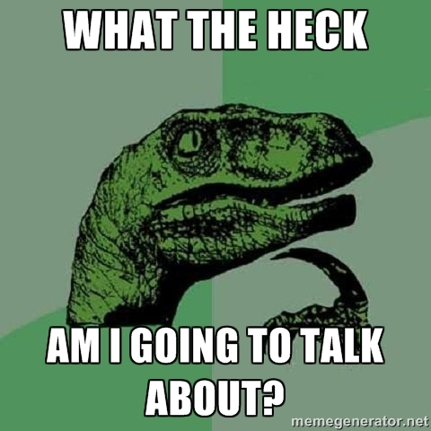
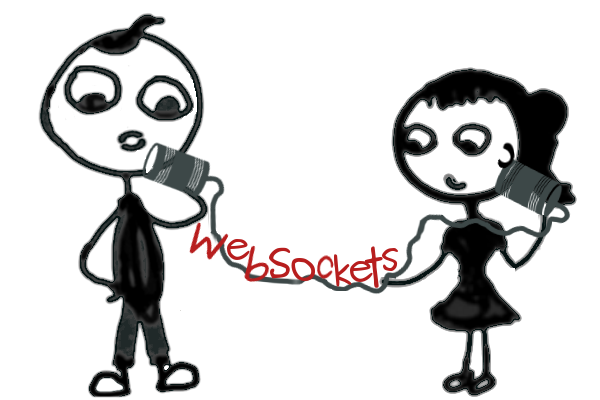

WearHacks 2015
How do you communicate?
Created by Mathieu Gagné
['hip', 'hip']
Hip Hip Array!
Who Am I

Communication
Introspection
Your inner dialect
Conversation
Conversation
Ajax Long Polling
WebSockets

Effective Collaboration
Redis & WebSocket
Have Fun!
To understand what recursion is, you must first understand recursion.